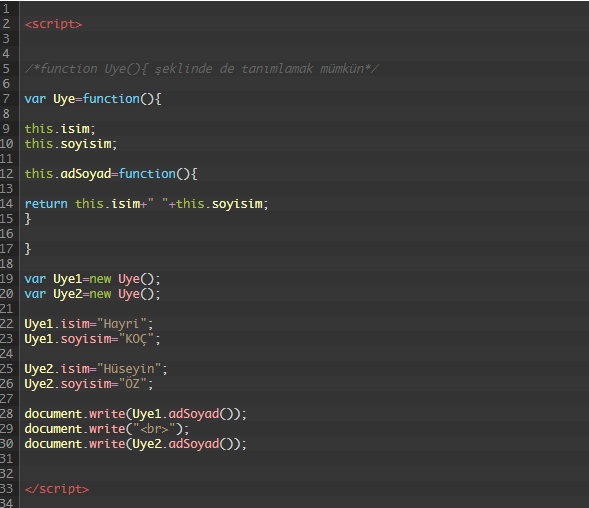

JavaScript programlama dilinde 5 tane veri tipi ve 3 tane referansı ifade eden Object tipi vardır. Veri tipleri Number, String, Boolean, Undefined, ve Null(bu da bir obje)dir. fonksiyon, dizi, nesne (object) gibi refrensları ifade eden Object tipler bulunmaktadır.
Javascript ile çeşitli yöntemler kullanarak nesne oluşturmak mümkündür. Bu yöntemlerde bir kaç tanesini örnekler ile açıklanmıştır.
1-JavaScriptte nesne oluşturmak için {} sembolleri kullanılır.
bu şekilde içinde hiç birşey olmayan adı Personel olan bir Nesne oluşturduk.
Oluşturulan nesneye bir kaç tane özellik ataması yapalım. Personelin adı,soyad, telefon numarası ve günlük ücreti olsun. Bunları nesneye eklemek için özellik : değeri şekilinde kullanacağız.
Eğer birden fazla özellik yada metod tanımlaması yapılacaksa her bir değer arasına virgül ( , ) sembolü konulmalıdır.
Metod tanımlaması yapmak içinse yine özellik : değeri gibi kullanılarak, özellik : fonksiyon şeklinde tanımlanmaktadır. Burada JS ile anonim fonksiyon tanımlaması yapılmaktadır. Eğer Nesne tanımlaması yapılırken özelliklerden biri metod içinde kullanılacaksa (örnekte ödeme hesaplamak için ücreti kullanacağız.) nesne içindeki özellik için this anahtar kelimesi kullanılır.
Aşağıda da farklı bir örnek ele alınmıştır. Kodları kopyalayıp, HTML belgesi oluşturarak kullanabilirsiniz.
this anahtarı nesne içindeki parçalara(ozellik,metod) ulaşmak için kullanılır.
2-) Başka bir JavaScript nesnesi oluşturma yöntemi de constructor pattern(yapıcı desen) olarak tanımlamak mümkündür. Fonksiyon tanımlama yöntemi ile sınıf oluşturup, oluşturulan sınıf new anahtarı ile nesne olarak türetilir.
